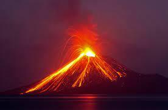
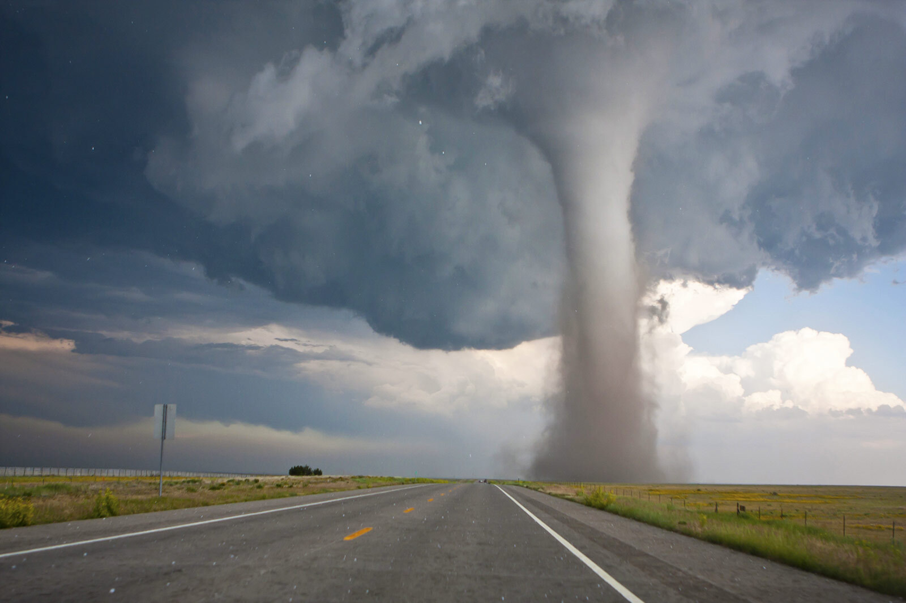

Between 2000 and 2012, natural disasters caused $1.7 trillion in damage and affected 2.9 billion people.
2012 marked the third consecutive year of worldwide natural disaster damage exceeding $100 billion.
Worldwide in 2011, there were 154 floods, 16 droughts, and 15 cases of extreme temperature.
Also there are 8 types of natural disaster:
Agricultural diseases & pests.
Damaging Winds.
Drought and water shortage.
Earthquakes.
Emergency diseases (pandemic influenza)
Extreme heat.
Floods and flash floods.
Hail.
Facts about volcano.
A volcano is a mountain that opens downward to a pool of molten rock below the surface of the earth. When pressure builds up, eruptions occur. In an eruption, gases and rock shoot up through the opening and spill over or fill the air with lava fragments. ... More than 80% of the earth's surface is volcanic in origin.
\
 >
Facts about Tornadeos.
A tornado is a violently rotating column of air extending from the base of a thunderstorm down to the ground. A tornado is not always visible unless it forms a funnel made up of water droplets, dust, and debris. The average tornado travels 3.5 miles and can last from 10 seconds to more than an hour.

Facts about floods.
Floods are the most common natural hazards in the United State